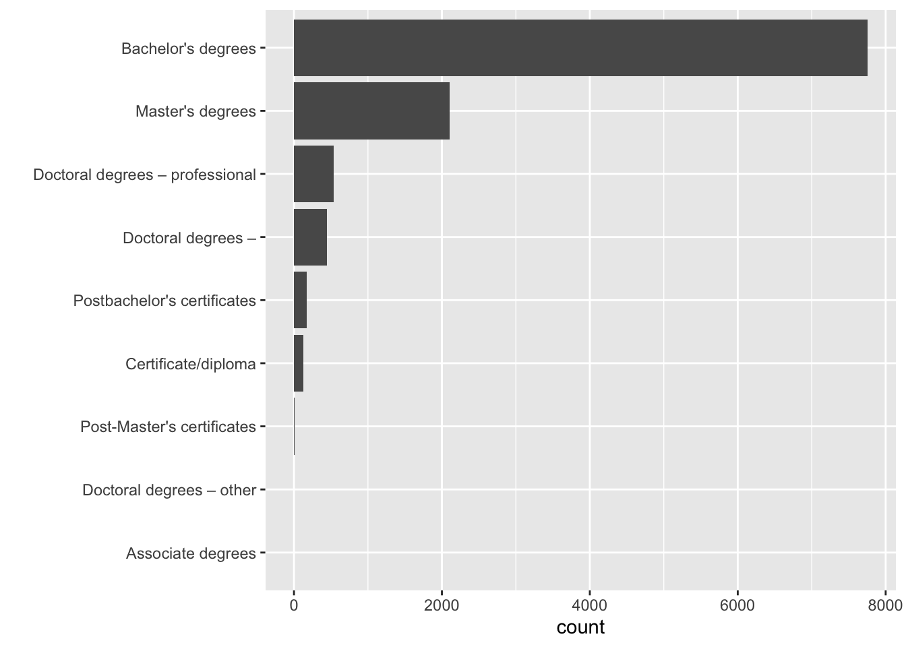
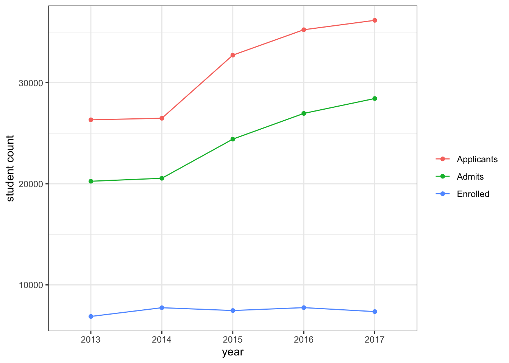

Module 12 Getting Data
12.1 Search for data sets
There are number of websites that are repositories of data sets. Here’s a list of some resources:
Kaggle Data Sets https://www.kaggle.com/datasets
Google Dataset Search https://datasetsearch.research.google.com/
U.S. Department of Education Public Data Listing https://www2.ed.gov/about/data/list.html
US Department of Health and Human Services, Datasets & Research Resources https://www.nichd.nih.gov/research/resources/index
City of Tucson Open Data https://gisdata.tucsonaz.gov/
12.2 Extracting data tables from pdf files
Many times you won’t have access to an actual data file. Many institutions make data available in pdf format. Lucky for us, there’s an R package to extract tables from pdf files.
As usual, we need to install the package first.
Remember we need to install a package only once (and updated it once in a while), but every time we want to use it, we need to call it with the library() function.
Let’s look at UArizona’s Common Data Set website.
For this lesson we will focus on the Common Data Set 2019-2020
First we need to run the extract_tables() function.
ua_common_dataset <- extract_tables("https://uair.arizona.edu/sites/default/files/2019-2020%20CDS_FINAL_060820.pdf")The extract_tables() function returns a list with all tables that it was able to extract from the pdf file given.
Let’s take a look at the seventh table in the list.
## [,1] [,2] [,3]
## [1,] "B3" "Certificate/diploma" "1 28"
## [2,] "B3" "Associate degrees" "-"
## [3,] "B3" "Bachelor's degrees" "7,754"
## [4,] "B3" "Postbachelor's certificates" "172"
## [5,] "B3" "Master's degrees" "2,100"
## [6,] "B3" "Post-Master's certificates" "9"
## [7,] "B3" "Doctoral degrees –" "448"
## [8,] "" "research/scholarship" ""
## [9,] "B3" "Doctoral degrees – professional" "533"
## [10,] "" "practice" ""
## [11,] "B3" "Doctoral degrees – other" "-"It’s pretty messy. We can start by converting it to an actual data frame.
## v1 v2 v3
## 1 B3 Certificate/diploma 1 28
## 2 B3 Associate degrees -
## 3 B3 Bachelor's degrees 7,754
## 4 B3 Postbachelor's certificates 172
## 5 B3 Master's degrees 2,100
## 6 B3 Post-Master's certificates 9
## 7 B3 Doctoral degrees – 448
## 8 research/scholarship
## 9 B3 Doctoral degrees – professional 533
## 10 practice
## 11 B3 Doctoral degrees – other -We don’t need the first column
## v2 v3
## 1 Certificate/diploma 1 28
## 2 Associate degrees -
## 3 Bachelor's degrees 7,754
## 4 Postbachelor's certificates 172
## 5 Master's degrees 2,100
## 6 Post-Master's certificates 9
## 7 Doctoral degrees – 448
## 8 research/scholarship
## 9 Doctoral degrees – professional 533
## 10 practice
## 11 Doctoral degrees – other -We can manually change the column names.
## [1] "v2" "v3"## type count
## 1 Certificate/diploma 1 28
## 2 Associate degrees -
## 3 Bachelor's degrees 7,754
## 4 Postbachelor's certificates 172
## 5 Master's degrees 2,100
## 6 Post-Master's certificates 9
## 7 Doctoral degrees – 448
## 8 research/scholarship
## 9 Doctoral degrees – professional 533
## 10 practice
## 11 Doctoral degrees – other -We can now delete empty rows (which comes from line breaks in the table, you can fix these further if you think it’s needed).
## type count
## 1 Certificate/diploma 1 28
## 2 Associate degrees -
## 3 Bachelor's degrees 7,754
## 4 Postbachelor's certificates 172
## 5 Master's degrees 2,100
## 6 Post-Master's certificates 9
## 7 Doctoral degrees – 448
## 8 Doctoral degrees – professional 533
## 9 Doctoral degrees – other -We can replace - with zero.
# replace - with 0
enrollment_data <- enrollment_data %>%
mutate(count = ifelse(count == "-",
0, count))
enrollment_data## type count
## 1 Certificate/diploma 1 28
## 2 Associate degrees 0
## 3 Bachelor's degrees 7,754
## 4 Postbachelor's certificates 172
## 5 Master's degrees 2,100
## 6 Post-Master's certificates 9
## 7 Doctoral degrees – 448
## 8 Doctoral degrees – professional 533
## 9 Doctoral degrees – other 0Finally, we convert count to number.
## type count
## 1 Certificate/diploma 1
## 2 Associate degrees 0
## 3 Bachelor's degrees 7754
## 4 Postbachelor's certificates 172
## 5 Master's degrees 2100
## 6 Post-Master's certificates 9
## 7 Doctoral degrees – 448
## 8 Doctoral degrees – professional 533
## 9 Doctoral degrees – other 0Remove spaces between numbers.
# use gsub to remove spaces (i.e., replace \\s with nothing)
enrollment_data <- enrollment_data %>%
mutate(count = gsub("\\s", "", count))
enrollment_data## type count
## 1 Certificate/diploma 128
## 2 Associate degrees 0
## 3 Bachelor's degrees 7,754
## 4 Postbachelor's certificates 172
## 5 Master's degrees 2,100
## 6 Post-Master's certificates 9
## 7 Doctoral degrees – 448
## 8 Doctoral degrees – professional 533
## 9 Doctoral degrees – other 0Try parse_number again
# try parse_number
enrollment_data <- enrollment_data %>%
mutate(count = parse_number(count))
# check data
enrollment_data## type count
## 1 Certificate/diploma 128
## 2 Associate degrees 0
## 3 Bachelor's degrees 7754
## 4 Postbachelor's certificates 172
## 5 Master's degrees 2100
## 6 Post-Master's certificates 9
## 7 Doctoral degrees – 448
## 8 Doctoral degrees – professional 533
## 9 Doctoral degrees – other 0We can add info about year, and then process all the other pdf files.
# try parse_number
enrollment_data <- enrollment_data %>%
mutate(year = 2019)
# check data
enrollment_data## type count year
## 1 Certificate/diploma 128 2019
## 2 Associate degrees 0 2019
## 3 Bachelor's degrees 7754 2019
## 4 Postbachelor's certificates 172 2019
## 5 Master's degrees 2100 2019
## 6 Post-Master's certificates 9 2019
## 7 Doctoral degrees – 448 2019
## 8 Doctoral degrees – professional 533 2019
## 9 Doctoral degrees – other 0 2019We can now plot the data.
# draw bar plot per type of degree
enrollment_data %>%
ggplot(aes(x = count,
y = reorder(type, count))) +
geom_col() +
ylab("")
12.3 Extracting data tables from websites
Other times you will find data available in webpages, or in HTML format. Lucky for us again, there’s an R package to extract tables from html files.
As usual, we need to install the package first.
Remember we need to install a package only once (and updated it once in a while), but every time we want to use it, we need to call it with the library() function.
## Loading required package: xml2##
## Attaching package: 'rvest'## The following object is masked from 'package:purrr':
##
## pluck## The following object is masked from 'package:readr':
##
## guess_encodingLet’s check what tables there are in UArizona’s wikipedia page.
First, we need to read in the html file.
We now parse the html for tables.
## {xml_nodeset (19)}
## [1] <table class="infobox vcard" style="width:22em">\n<caption class="fn org ...
## [2] <table class="multicol" role="presentation" style="border-collapse: coll ...
## [3] <table class="infobox" style="width: 22em"><tbody>\n<tr><th colspan="2" ...
## [4] <table class="wikitable sortable collapsible collapsed" style="float:rig ...
## [5] <table class="wikitable sortable collapsible collapsed" style="float:rig ...
## [6] <table style="float:right; font-size:85%; margin:10px" class="wikitable" ...
## [7] <table role="presentation" class="mbox-small plainlinks sistersitebox" s ...
## [8] <table class="nowraplinks hlist mw-collapsible mw-collapsed navbox-inner ...
## [9] <table class="nowraplinks mw-collapsible mw-collapsed navbox-inner" styl ...
## [10] <table class="nowraplinks mw-collapsible mw-collapsed navbox-inner" styl ...
## [11] <table class="nowraplinks mw-collapsible autocollapse navbox-inner" styl ...
## [12] <table class="nowraplinks mw-collapsible autocollapse navbox-inner" styl ...
## [13] <table class="nowraplinks navbox-subgroup" style="border-spacing:0"><tbo ...
## [14] <table class="nowraplinks mw-collapsible autocollapse navbox-inner" styl ...
## [15] <table class="nowraplinks mw-collapsible autocollapse navbox-inner" styl ...
## [16] <table class="nowraplinks mw-collapsible autocollapse navbox-inner" styl ...
## [17] <table class="nowraplinks mw-collapsible autocollapse navbox-inner" styl ...
## [18] <table class="nowraplinks mw-collapsible autocollapse navbox-inner" styl ...
## [19] <table class="nowraplinks hlist navbox-inner" style="border-spacing:0;ba ...Too many tables. We can be specific, and retrieve nodes per class.
## {xml_nodeset (3)}
## [1] <table class="wikitable sortable collapsible collapsed" style="float:righ ...
## [2] <table class="wikitable sortable collapsible collapsed" style="float:righ ...
## [3] <table style="float:right; font-size:85%; margin:10px" class="wikitable"> ...This looks a little better.
It looks like the table we want is the third table.
# create wiki_tables object
wiki_tables <- uarizona_wiki_html %>%
html_nodes(".wikitable")
# transform node into an actual table
fall_freshman_stats <- wiki_tables[[3]] %>%
html_table(fill = TRUE)
# check data
fall_freshman_stats## 2017 2016 2015 2014 2013
## 1 Applicants 36,166 35,236 32,723 26,481 26,329
## 2 Admits 28,433 26,961 24,417 20,546 20,251
## 3 % Admitted 78.6 76.5 74.6 77.5 76.9
## 4 Enrolled 7,360 7,753 7,466 7,744 6,881
## 5 Avg GPA 3.43 3.48 3.38 3.37 3.40
## 6 SAT range* 1015–1250 1010–1230 1010–1230 1000–1230 990–1220
## 7 * SAT out of 1600 <NA> <NA> <NA> <NA> <NA>Tidy it.
# first column name is blank
colnames(fall_freshman_stats)[1] <- "type"
# pivot years
fall_freshman_stats <- fall_freshman_stats %>%
pivot_longer(cols = "2017":"2013",
names_to = "year")
# make value a number
fall_freshman_stats <- fall_freshman_stats %>%
mutate(value = as.numeric(parse_number(value)))
# inspect data
glimpse(fall_freshman_stats)## Rows: 35
## Columns: 3
## $ type <chr> "Applicants", "Applicants", "Applicants", "Applicants", "Applic…
## $ year <chr> "2017", "2016", "2015", "2014", "2013", "2017", "2016", "2015",…
## $ value <dbl> 36166.00, 35236.00, 32723.00, 26481.00, 26329.00, 28433.00, 269…Plot it.
fall_freshman_stats %>%
filter(type %in% c("Applicants", "Admits", "Enrolled")) %>%
ggplot(aes(x = year,
y = value,
color = fct_reorder(type, value, .desc = TRUE))) +
geom_point() +
theme_bw() +
geom_line(aes(group = type)) +
labs(y = "student count",
color = "")
12.4 Project Proposal
Project Proposal is due next week (Nov. 05, 2020).